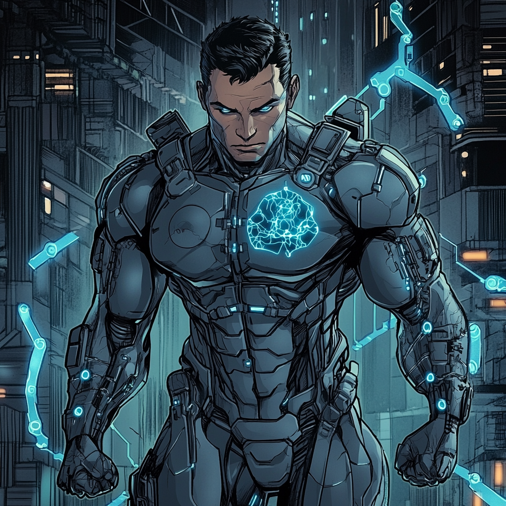

DEX797: Evolution of a Digital Warrior

Silicon Origins Alex Zendala, the son of Dr. Maria Zendala, a robotics pioneer, grew up in the MIT faculty housing. His childhood playground consisted of labs and workshops where autonomous systems learned to walk and think. By age ten, he built his first combat robot for the collegiate division.
His father's death in Afghanistan pushed him toward military service despite his mother's objections. She wanted him to pursue a Ph.D. in robotics. Instead, he enlisted in the Marines at eighteen, carrying only his tactical tablet and a set of prototype neural interfaces.
Project NEXUS The Marine Corps recognized his technical aptitude immediately. They assigned him to Project NEXUS, a classified program developing enhanced combat systems. This put him in parallel with Shiro Tatsuya's unit, though they operated independently.
NEXUS focused on integrating human operators with advanced combat suits. Alex excelled at both technical development and practical applications. He helped design the neural interface systems while serving as the primary test pilot.
The Merge During a field test in Nevada, an electromagnetic surge fused Alex's neural interface with his nervous system. The prototype combat suit melted into his body, integrating with his cellular structure. This accident transformed him into a hybrid - part human, part advanced technology.
The military doctors couldn't separate the technology from his tissue without killing him. Project NEXUS classified him as "Digital Entity X-797" or DEX797. His body now generated a techno-organic mesh that functioned as armor, weapons, and enhanced sensory systems.
Digital Evolution The accident changed more than his body. Alex gained the ability to process information at computer speeds and interface directly with digital systems. His combat effectiveness increased exponentially as the integrated systems evolved with him.
He developed a reputation for impossible shots and split-second reaction times. The prototype targeting systems merged with his muscle memory, making him lethal with any weapon. His techno-organic armor adapted to threats, learning from each engagement.
The Boston Connection A mission to stop cyber-terrorists in Boston brought him into contact with the BAA. His team tracked the hackers to a server farm near MIT. During the operation, he encountered Mind Wave, who recognized the unique digital signature of his neural patterns.
Vision recognized the unique potential in his techno-organic nature and adaptive capabilities. The Marine Corps agreed to assign him to the BAA, seeing an opportunity to strengthen ties between conventional forces and superhuman defenders.
Present Day Alex maintains a workshop in the BAA's technical wing, constantly upgrading his integrated systems. His mother serves as a technical consultant, helping him understand his evolving capabilities. The military still classifies much about Project NEXUS, but they permit him to upgrade his systems using BAA resources.
His greatest challenge remains maintaining his humanity as his integration with technology deepens. Each upgrade pushes the boundaries between man and machine. Yet his military training and strong ethical foundation keep him grounded.
The other BAA teams often seek his expertise on technical threats. His ability to interface directly with computer systems provides unique tactical advantages. He specializes in cybersecurity missions and tech-based threats, though his combat skills make him effective in any operation.
Combat Systems Analysis DEX797's integrated capabilities include techno-organic armor that adapts to threats, neural-digital interface for enhanced targeting and reaction time, direct computer system integration, advanced sensor suite with tactical overlay, and modular upgrade capability. However, these systems come with limitations: regular maintenance requirements, vulnerability to electromagnetic interference, potential system crashes that can temporarily disable capabilities, and power consumption issues during extended operations.
His presence at BAA represents a new evolution in human-technology integration, bridging the gap between conventional military forces and the superhuman community. While not part of the primary response team, he serves as a crucial tactical asset and technical advisor.